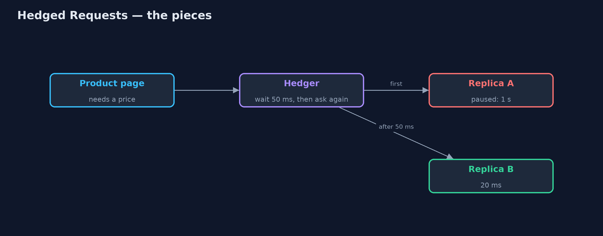
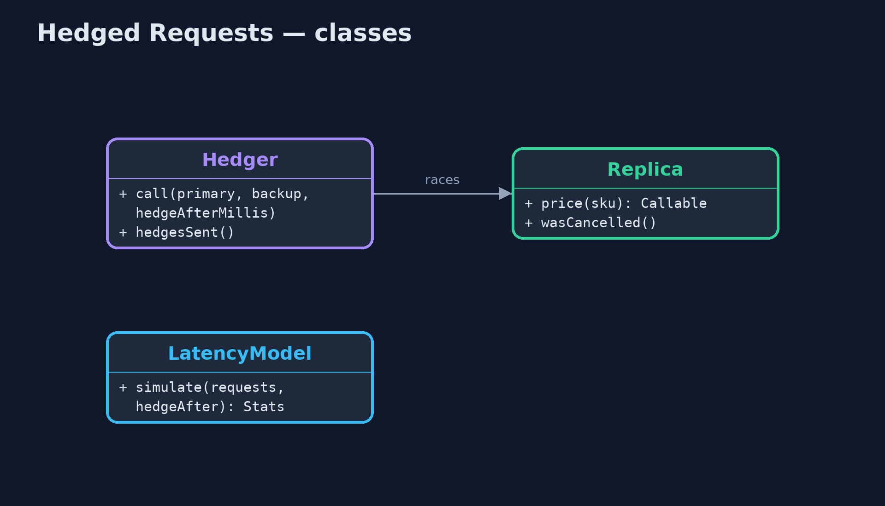
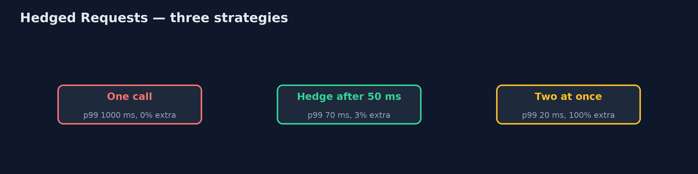
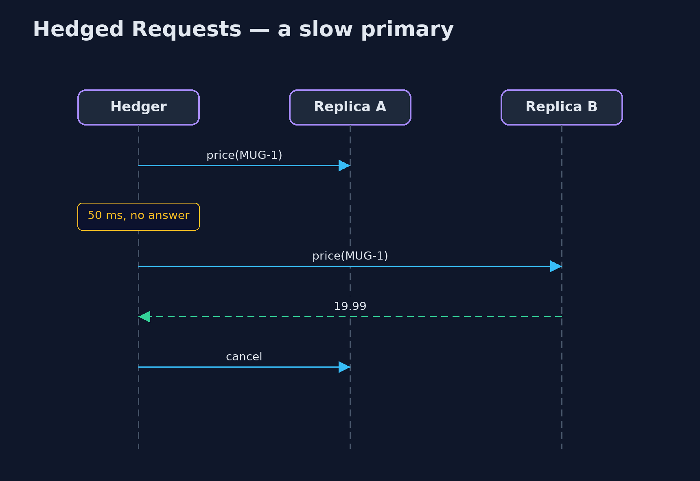

Hedged Requests Pattern
src/main/java/com/jk/explore/hedgedrequests/
├── HedgedRequestsDemo.java The five acts: the slow tail, hedging after a delay, hedging at once, a real race with cancellation, and the bill
├── Hedger.java The pattern with real threads: call the primary; if it has not answered within the hedge delay, call a backup too; take whichever answers first and cancel the other
├── LatencyModel.java Simulated price-service replicas: 20 ms normally, 1,000 ms when a replica is paused (about 1 call in 33)
└── Replica.java One copy of the price service, answering after a fixed delayIf a call has not answered within a short delay, send the same call to a second replica, use whichever answers first, and cancel the other.
Hedged Requests is a pattern for cutting tail latency: the rare, very slow calls that make a page feel sluggish even when the average is fast. The client calls one replica. If no answer arrives within a short delay, usually around the 95th percentile of normal response times, it sends the same request to a second replica, takes whichever answer comes first, and cancels the other.
Because the backup is only sent for the few slow calls, the extra load is small, while the worst waits shrink dramatically. It was made famous by Google's paper "The Tail at Scale".
The idea in everyday terms
Think of calling a shop to ask if something is in stock. Nobody answers after a few rings, so you call their other branch too. Whichever answers first gets your question, and you hang up on the other. You only make the second call when the first is slow, so most of the time you make just one.
The scenario
The online store's product page asks the price service for each price. There are several copies of the price service, called replicas. Most answers take twenty milliseconds, but now and then a replica pauses, for example for garbage collection, and that call takes a whole second. About one call in thirty-three is slow, so the 99th percentile is a full second.
Run
./gradlew runThe demo tells the story in 5 acts, each printing exact numbers that the tests check:
| Act | What it shows |
|---|---|
| 1. One call, and a slow tail | 1,000 price lookups: the median is 20 ms but the 99th percentile is 1,000 ms, because 1 call in 33 hits a paused replica. |
| 2. Hedge after 50 ms | If no answer in 50 ms, ask a second replica: the 99th percentile drops to 70 ms, for only 3% extra calls. |
| 3. Hedge at once | Always asking two replicas brings the 99th percentile to 20 ms, but doubles the load: 1,000 extra calls. |
| 4. A real race | With real threads: replica A takes 1 s, replica B 20 ms; the hedged call answers from B in under 0.5 s, and A's call is cancelled. |
| 5. The bill | Only hedge calls that are safe to repeat, never "place order"; and cap hedges, because under overload they add load. |
Test
./gradlew test4 tests in DemoRunsTest, HedgerTest. Every number the demo prints is asserted, and nothing depends on the clock, so every run gives the same result.
Technologies and versions
| Technology | Version | Used for |
|---|---|---|
| Java | 21 | the code (toolchain set in build.gradle) |
| Gradle | 9.2.1 (wrapper) | build and run, nothing to install |
| JUnit | 5.10.2 | the tests |
| videokit | repository tool | the narrated video and animation: Piper en_US-amy-medium, speed 0.8, longer pauses (the approved amy-slow voice) |
Learning Material
| Document | What it is for |
|---|---|
| Problem statement | the situation and what the project must show |
| Prerequisites | what you need to know first |
| Hedged Requests, explained | the acts in prose |
| Session guide | a one-hour lesson with exercises |
| Animated walkthrough | the acts step by step, narrated |
| Spec | what this project must be true of |
The pattern in one picture
A backup call after 50 ms; first answer wins.

Where each piece sits
A race between two callables.

How the data moves
The 99th percentile against the extra load.

Who calls whom, in order
B answers; A is cancelled.

Video
video/hedged-requests-pattern-explained.mp4 (with .m4a audio and .srt subtitles) is built by video/build_video.sh. Rendered media is not committed.
What it costs
- Only for calls that are safe to repeat. Hedging a price lookup is fine; hedging "place order" could charge the customer twice.
- Extra load. Each hedge is a second call. With a 50 ms delay it was 3%; sending two at once doubled the load.
- Harmful under overload. If every replica is slow because they are all busy, hedging makes it worse, so cap hedges at a few percent.
When this is too much
When calls are uniformly fast, or there is only one replica to ask, there is nothing to hedge. It pays off for read-heavy services with several replicas and an occasional slow outlier.
Where you have already met this
- Google's "The Tail at Scale" and Bigtable's hedged reads.
- gRPC's hedging policy, configured per method.
- Cassandra's speculative retry and HDFS hedged reads.
CompletableFuture.anyOffor racing calls in Java.
Where this sits
This project is in micro-services-design-patterns, and near Backpressure, which warns of the opposite risk: sending more work than the other side can handle.